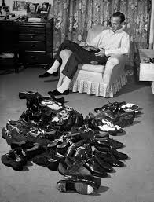

Best Shoes of 2024
The best shoes of 2024 have just been released! Are you ready...? It's the G.H. Bass Loafer.
My content is visible, but contained.
G.H. Bass was the first American manufacturer to construct leather loafers inspired by fashionable footwear popular in the social scene of Palm Beach. Featuring a signature strip of leather stitched across the saddle of the shoe, these penny loafers harkened back to traditional shoes worn by Norwegian fishermen, hence the name “Weejuns.”Influenced by an influx of Jamaicans to the UK, British youth began to adopt aspects of the island’s culture, mixing it with style cues from the Mods and Teddy Boys of previous decades. They preferred sharp suiting, thin ties, pork pie hats and Weejuns.
Weejuns penny loafers continue to unite style sects with the universal nature of their classic design and contemporary vibe. In the digital social era, people are able to share their opinions on politics, art, and, of course, personal fashion now more than ever.
